Classification Methods for UAS Data
Center for Geospatial Analytics at North Carolina State University
Objectives
- Distinguish pixel based, object based, and scene classification of UAS imagery
- Explain what the bands of RGB and multispectral cameras record and compute spectral indices from them
- Derive spatial, textural, and terrain features and segment an image into objects
- Train a random forest, map its predictions, and read the feature importances
- Assess a classification with a confusion matrix on reference data the model has not seen
Image classification
What is image classification?
Image classification: assigning a label from a fixed set of classes (building, tree, road, crop) to each unit of an image
- Land cover and land use mapping
- Crop type, weed, and disease mapping
- Flood and damage extent after an event
- Species identification and counts of individuals
- Detection and tracking of objects such as vehicles
UAS data characteristics
- Very high spatial resolution, 1 to 10 cm: objects are many pixels wide
- Few spectral bands: RGB, or four to ten narrow bands with a multispectral camera
- High variability within a class: a tree crown contains sunlit leaves, shaded leaves, and branches
- Shadows, view angle effects, and illumination that changes during the flight
- A DSM from the same flight, registered to the image
Units of classification
Pixel based: each cell receives a label from its own feature values
Object based: the image is first segmented into groups of similar cells; the groups are classified
Scene classification: a whole image or image tile receives one label
- Pixel based maps of UAS imagery are speckled: neighboring cells of one object receive different labels
- Object based maps follow object outlines but depend on the segmentation
- Deep learning adds two more outputs: boxes around objects (detection) and a label per cell from a network that sees the neighborhood (semantic segmentation)
Spectral information
Spectral properties
- Each surface reflects a characteristic share of the incoming light at each wavelength: its spectral reflectance curve
- UAS sensors record reflected light in discrete bands
- Red, green, and blue with a standard camera
- Red edge and near infrared with a multispectral camera
- Thermal infrared with a separate sensor
- Bands are combined into spectral indices that are used as features for classification
Reflectance spectra and sensor bands
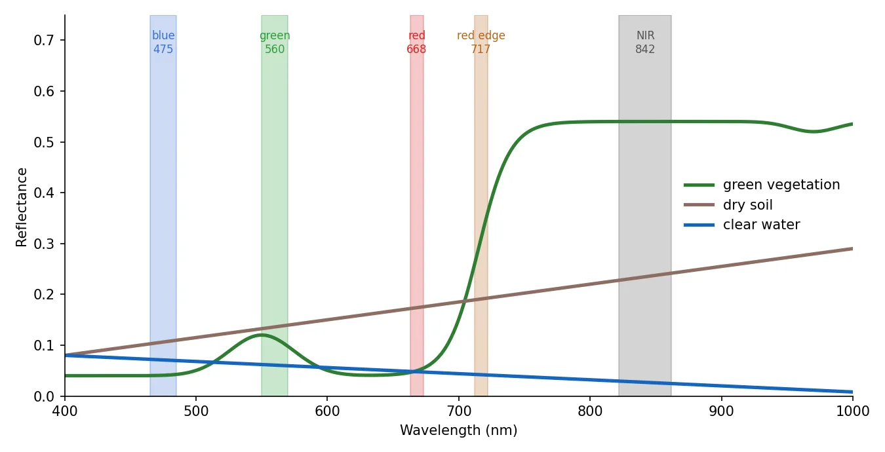
Schematic spectra; the band positions are those of the MicaSense RedEdge (center wavelength, width in the shaded strip).
The bands of a multispectral UAS camera
| Band | Typical range | What it responds to |
|---|---|---|
| Green | 500 to 600 nm, peak near 550 | Chlorophyll reflection; healthy leaves look green |
| Red | 600 to 700 nm | Chlorophyll absorption; low for vegetation, higher for soil |
| Red edge | 700 to 730 nm | The transition from absorption to NIR reflection; sensitive to chlorophyll content and stress |
| NIR | 700 nm to 1.3 µm | Leaf cell structure; the strongest reflectance of healthy vegetation |
Multispectral cameras
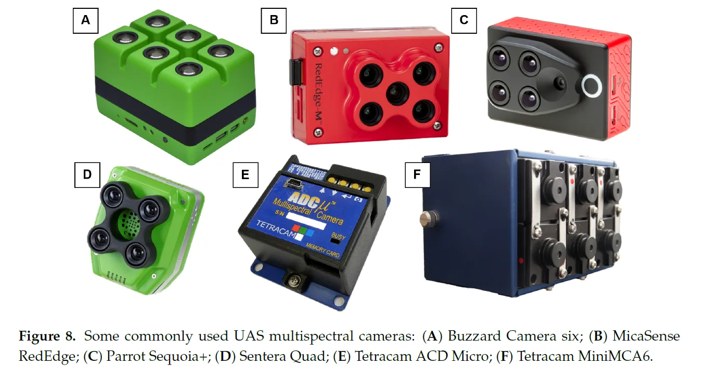
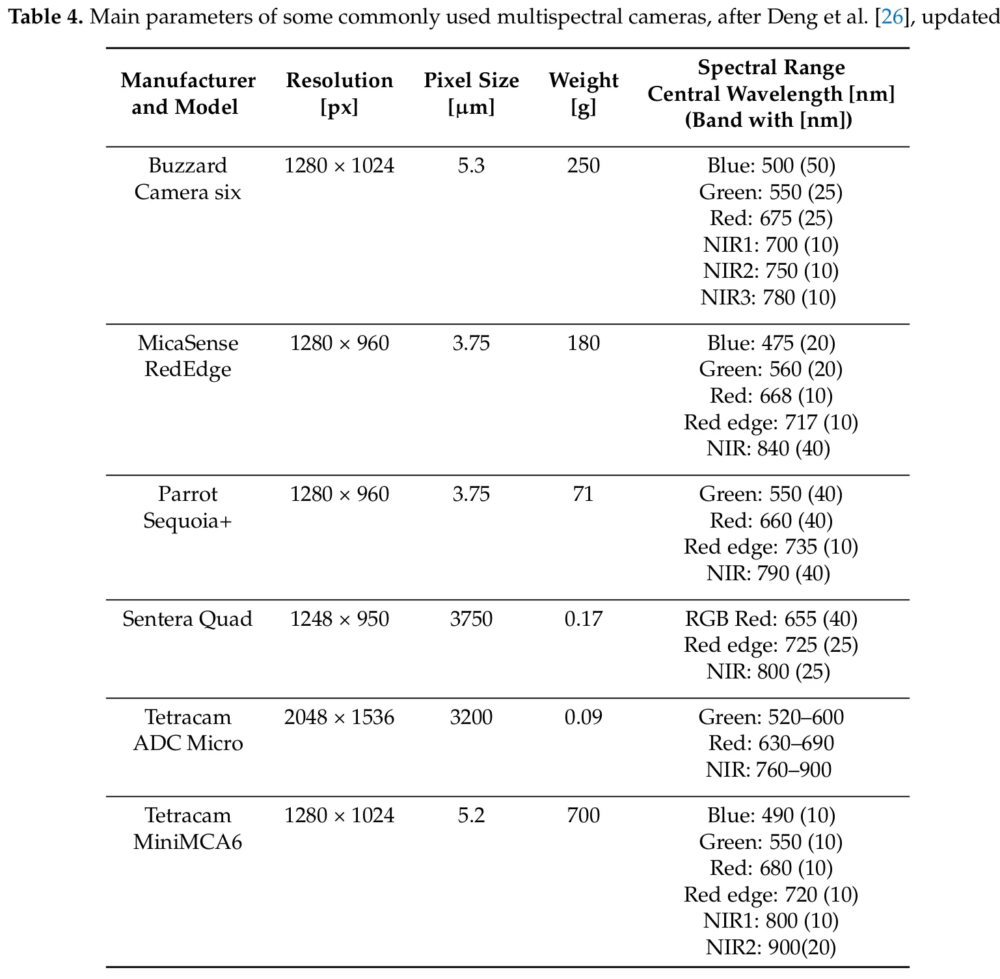
Figure and table from Jeziorska (2019). One lens and sensor per band, so the bands are offset and aligned in processing.
From digital numbers to reflectance
- A camera records digital numbers: counts that depend on the sun, the atmosphere, the exposure, and the surface
- Indices and comparisons between dates need reflectance: the fraction of incoming light the surface reflects
- Calibration: a reflectance panel of known reflectance imaged before and after the flight, plus a downwelling light sensor on the aircraft that records the incoming light during the flight
- The empirical line method fits a line between the digital numbers of several targets and their measured reflectance, per band
Vegetation indices
- An index combines bands arithmetically so that one number tracks one property, mostly green vegetation
- Normalized differences, (A - B) / (A + B), range from -1 to 1 and cancel part of the illumination differences
- NDVI (Rouse et al. 1974) is the reference; VARI (Gitelson et al. 2002) does the same job with RGB only; SAVI (Huete 1988) corrects for bright soil between sparse plants
Index maps from the lab
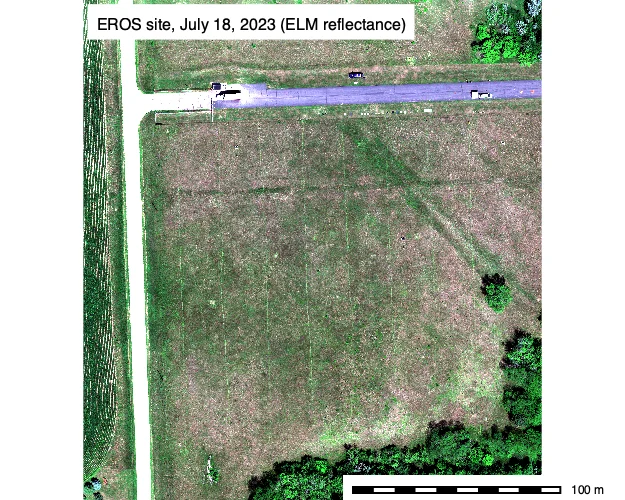
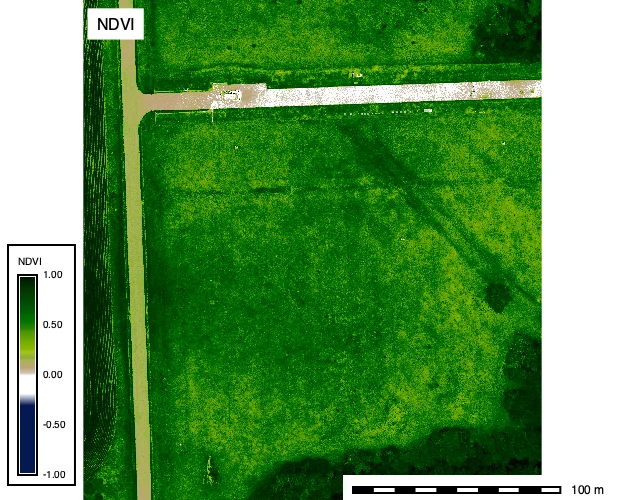
MicaSense RedEdge-MX Dual, 10 bands, July 18, 2023, EROS calibration site, South Dakota (Irwin et al. 2025). NDVI from the 668 and 842 nm bands: grass 0.5 to 0.7, crop rows and trees 0.8 to 1, roads near zero.
Common spectral indices
| Index | Formula | Bands | Purpose |
|---|---|---|---|
| NDVI | (NIR - Red) / (NIR + Red) | NIR, red | Green vegetation; 0.2 to 0.8 for crops and forest |
| NDRE | (NIR - RedEdge) / (NIR + RedEdge) | NIR, red edge | Chlorophyll in dense canopies, late season crops |
| SAVI | (1 + L) (NIR - Red) / (NIR + Red + L), L = 0.5 | NIR, red | Sparse vegetation over bright soil |
| GNDVI | (NIR - Green) / (NIR + Green) | NIR, green | Chlorophyll, less saturation than NDVI |
| NDWI | (Green - NIR) / (Green + NIR) | green, NIR | Open water |
| VARI | (Green - Red) / (Green + Red - Blue) | RGB | Green vegetation from RGB |
| GLI | (2 Green - Red - Blue) / (2 Green + Red + Blue) | RGB | Green vegetation from RGB |
| NDBI | (SWIR - NIR) / (SWIR + NIR) | SWIR, NIR | Built-up areas (satellite sensors) |
Features
Feature engineering
Feature: one raster of values offered to the model for each cell: a band, an index, a filter result, a texture measure, or a terrain derivative
| Group | Examples | What it adds |
|---|---|---|
| Spectral | Bands, VARI, NDVI | Color and vegetation contrast |
| Spatial filters | Mean, standard deviation, edges | The neighborhood of the cell |
| Texture | GLCM measures | The pattern of grey levels |
| Terrain | Height, slope, curvature, landforms | The shape of the surface |
| Transformations | Principal components | Fewer, uncorrelated bands |
A spectral index as a feature
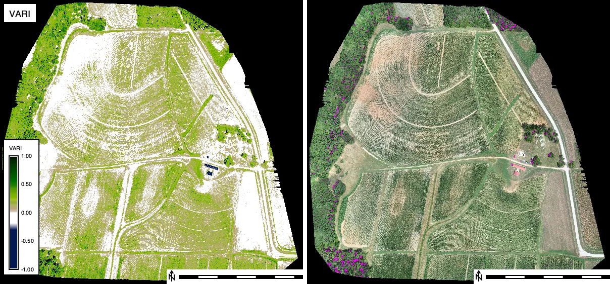
In GRASS: r.mapcalc expression="vari = float(ortho.2 - ortho.1) / (ortho.2 + ortho.1 - ortho.3)"; float() avoids integer division of the 8-bit bands
Spatial filters
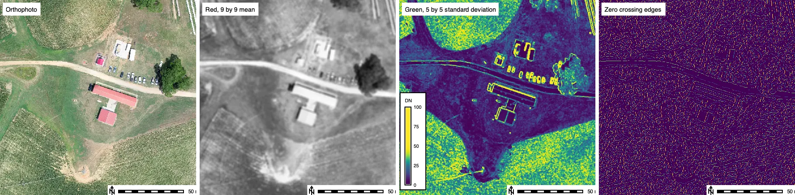
Low pass filter: a moving window mean; removes fine variation such as crop rows
High pass filter: local variation or edges; standard deviation, zero crossings
Texture
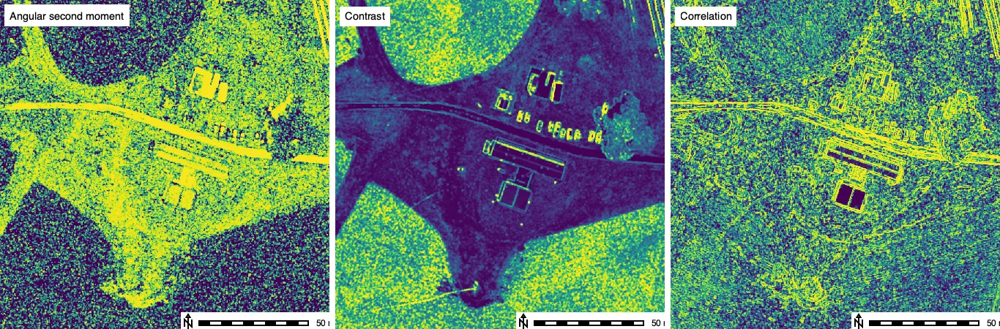
Grey level co-occurrence matrix (GLCM): counts how often pairs of grey levels occur in neighboring cells of a window; its statistics describe texture (Haralick et al. 1973). In GRASS: r.texture input=ortho.2 output=green_tex method=asm,contrast,corr size=5
Terrain features
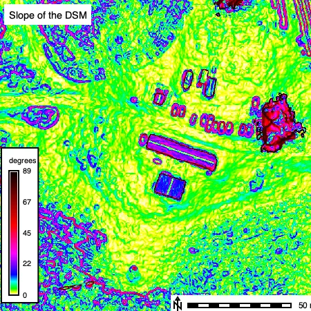
Slope of the DSM
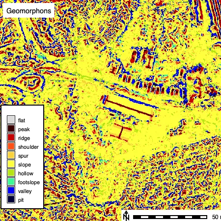
Geomorphons, 3 m search radius
In GRASS: r.slope.aspect for slope and curvatures, r.geomorphon for landforms (Jasiewicz and Stepinski 2013)
Segmentation
Superpixels and object statistics
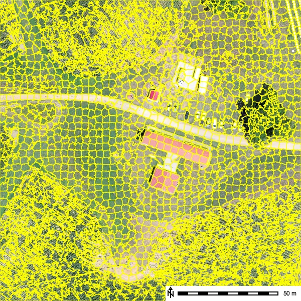
Superpixel: a compact group of neighboring cells with similar values; SLIC grows them from a regular grid of seeds (Achanta et al. 2012)
- Each segment becomes one row of a table: mean and spread of each band, area, compactness
- The table is classified in place of the cells
- In GRASS:
i.superpixels.slicandi.segment.stats;i.segmentfor region growing
Promptable foundation models
Foundation model: a model trained once on a very large dataset and used for many tasks without further training. SAM (Kirillov et al. 2023) and SAM 2 (Ravi et al. 2024) return the outline of an object for a prompt: a point, a box, or, combined with a text model, a word
- Text prompts: Grounding DINO (Liu et al. 2024) finds boxes that match the words, SAM 2 outlines the object in each box
- No training polygons, no features; the output is a set of objects, not a label for every cell
- Thresholds control how confident a box and its match to the text must be
- In GRASS:
i.sam2 group=farm_rgb output=sam_trees text_prompt="trees", through the samgeo package (Wu and Osco 2023)
Text prompted segmentation at Lake Wheeler
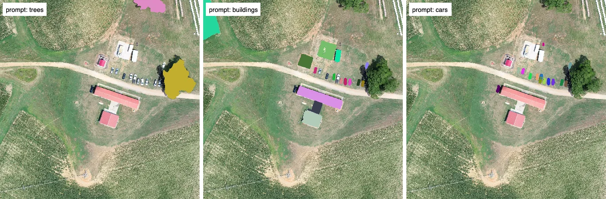
Prompts “trees”, “buildings”, and “cars” at the default thresholds of 0.24: 2, 15, and 15 objects.
Training and prediction
Supervised and unsupervised learning
Supervised: the model learns the classes from labeled samples
- Random forest, gradient boosting, support vector machines
- Needs training data for every class
- Training data from one place or date may not hold for another
Unsupervised: cells are grouped by similarity; the analyst names the groups afterwards
- k-means, ISODATA
- No training data
- The clusters need not correspond to the classes of interest
Deep learning
- Convolutional neural networks learn their own spatial features from the image, in place of hand made filters and textures
- Architectures by task: classification networks for scenes, U-Net for a label per cell, detectors for boxes
- They need many labeled examples and a GPU for training; pretrained models reduce both
- Foundation models such as SAM 2 are the same idea at a larger scale: pretrained once, prompted for each task
Sampling design
| Design | How samples are placed | Consideration |
|---|---|---|
| Random | Anywhere in the extent with equal probability | Rare classes receive few samples |
| Stratified random | A fixed number per class or stratum | Needs a prior map of the strata |
| Cluster | Groups of nearby samples, such as digitized polygons | Efficient to collect; samples within a polygon are not independent |
- Reference data are divided into a training set and a test set the model never sees
- Neighboring cells are spatially autocorrelated: dividing the cells of one polygon at random puts near copies on both sides
- Divide by polygon or by area, not by cell
Random forest
Random forest: many decision trees, each trained on a bootstrap sample of the training data and a random subset of the features at each split; the class is the majority vote (Breiman 2001)
- Works with features of different units and ranges without scaling
- Few parameters: the number of trees and the number of features tried at each split
- Feature importance: the drop in accuracy when one feature is shuffled
- In GRASS:
r.learn.train group=features training_map=train_rast model_name=RandomForestClassifier, thenr.learn.predict
Two classifications of Lake Wheeler

RGB bands (left) and 14 features (right), July 17, 2024
Feature importance

- The DSM is the most important feature, ahead of the smoothed red band, VARI, and slope
- Elevation is a property of the location, not of the class
- The farm equipment polygons lie at the elevation of the southern fields
Accuracy assessment
The confusion matrix
| Map \ Reference | Forest | Water | Urban | Agriculture | User’s accuracy (%) |
|---|---|---|---|---|---|
| Forest | 50 | 2 | 3 | 0 | 90.9 |
| Water | 1 | 45 | 0 | 4 | 90.0 |
| Urban | 2 | 1 | 40 | 7 | 80.0 |
| Agriculture | 0 | 3 | 5 | 42 | 84.0 |
| Producer’s accuracy (%) | 94.3 | 88.2 | 83.3 | 79.2 |
- Overall accuracy: correct samples divided by all samples, 177 / 205 = 86.3 %
- User’s accuracy: of the samples mapped as a class, the share that is the class (row); 100 % minus the commission error
- Producer’s accuracy: of the reference samples of a class, the share mapped as the class (column); 100 % minus the omission error
- Kappa: agreement beyond chance, here 0.82
Training accuracy and test accuracy
| Model | Training polygons | Test polygons |
|---|---|---|
| RGB bands | 99.5 %, kappa 0.98 | 54.6 %, kappa 0.17 |
| 14 features | 100 %, kappa 1.00 | 53.6 %, kappa 0.21 |
- A random forest reproduces its training data almost perfectly; that number says nothing about the rest of the map
- On the test polygons the features raise the producer’s accuracy of trees from 85 to 99 %, ground from 47 to 93 %, and bales from 7 to 86 %
- The overall accuracy does not change: 168,051 cells of one test field are mapped as farm equipment
- With unequal classes, the overall accuracy mostly reports on the largest class
Challenges
- Class definitions: “fields” covers bare soil and planted rows; “crop” and “farm equipment” have very few training cells
- Transfer: a model trained on one flight meets different illumination, phenology, and sensors on the next
- Scale: the features that describe a car differ from the ones that describe a field
- Location proxies: features such as elevation or coordinates that identify the training polygon in place of the class
- Computation: 122 million cells at 7 cm; the assignment works at 0.2 m
Key terms
Feature: a raster of values offered to the model for each cell
Random forest: an ensemble of decision trees trained on bootstrap samples; the class is their majority vote
Foundation model: a model pretrained on a very large dataset and prompted for a task without further training
Confusion matrix: the cross tabulation of mapped and reference classes
User’s accuracy: the share of a mapped class that is correct; the complement of the commission error
Producer’s accuracy: the share of a reference class that was found; the complement of the omission error
Wrap-up
Assignment 6A: UAS image classification
Lab (optional): Vegetation indices from UAS imagery